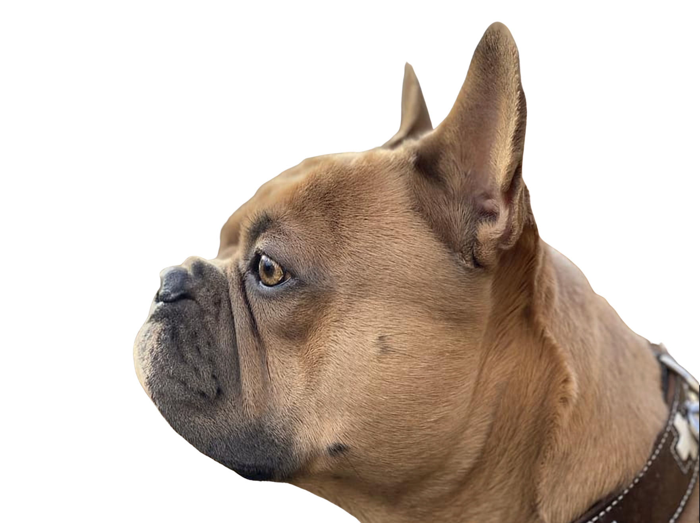
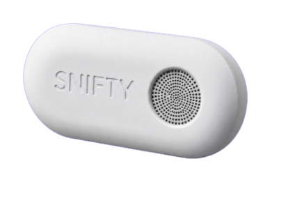

Snifty sits in your home and reads your breath chemistry around the clock — detecting the chemical fingerprint of lung cancer before you ever feel a symptom.

Lung cancer's survival rate has nothing to do with the cancer. It's about when you find it.
75% of cases are found at Stage 3 or 4. That's what Snifty is changing.

Snifty is a small wearable or bedside device that you breathe into daily, about the size of an AirPods case, designed to passively analyze the chemical signature of your breath without needing a clinic or test. It uses specialized sensors to detect VOC biomarkers linked to early-stage lung cancer, then sends this data to an app where AI compares each reading to your personal baseline built over time. Instead of relying on fixed thresholds, it detects subtle changes in your breath patterns that could signal early disease. The app shows a daily health score, trends, and alerts if something unusual is detected, prompting you to see a doctor. Snifty doesn’t diagnose—it flags early risk, helping catch lung cancer when it’s most treatable.
You breathe into or near the device for about 30 seconds each day.
The sensors analyze your breath and generate a chemical fingerprint.
The data is sent to the app.
AI compares the reading to your personal baseline and detects subtle changes over time.
The app displays a daily health score, trends, and alerts if something unusual is detected, prompting you to see a doctor and share the data if needed.
The Snifty app shows your VOC baseline over time, flags deviations, and tells you exactly what to do next — so you always know where you stand.
Lung cancer kills more people than breast, colon, and prostate cancer combined. And yet — there's no passive, at-home way to screen for it. Nothing you can set up and forget. Nothing that watches while you sleep.
The existing option is a low-dose CT scan: expensive, involves radiation, requires a clinic, and only recommended for heavy smokers over 50. Most people don't qualify. Most who do, don't go.
So three out of four people get diagnosed when it's already Stage 3 or 4 — when treatment is brutal and survival rates drop to single digits.
The technology to catch it earlier has existed in research labs for decades. It just never made it home.
5-year survival rate by stage at detection
Every breath you exhale carries hundreds of volatile organic compounds — chemical byproducts of what's happening inside your body metabolically. When cancer develops, cellular metabolism changes. Those changes produce a specific VOC fingerprint.
Peer-reviewed research from the Cleveland Clinic, University of Louisville, and multiple European institutions has confirmed that breath-based VOC analysis can detect lung cancer at early stages with high sensitivity. The science isn't new. The consumer device is.
See how Snifty uses it →VOC molecules — including cancer-associated biomarkers — disperse into the air around you at trace concentrations Snifty's sensors are calibrated to detect.
High-sensitivity electrochemical sensors sample continuously, identifying hundreds of compounds — including the specific VOC biomarkers validated in peer-reviewed cancer research.
Unlike population screening, Snifty learns what normal looks like for you — factoring in your diet, environment, and genetics. Deviations from your baseline trigger alerts. Not statistical noise.
When something meaningful shifts, the app tells you — and tells you what to do. Whether that's watching closely or booking a CT scan.
Snifty requires zero active participation after setup. It learns your chemistry, monitors continuously, and only asks for your attention when something warrants it.
Nightstand, desk, living room — anywhere you spend time. Plug it in. No tubes, no masks, no routine.
In the first 30 days, Snifty's AI builds a chemical profile unique to you. This is your reference point — not a population average.
24/7, Snifty compares live readings against your baseline. Trends, patterns, and anomalies are logged automatically.
If a meaningful deviation is detected, you get an alert and a specific recommendation — not just a number to worry about.
Generic breath analysis compares you to a population average — noisy, imprecise, and prone to false alarms. Snifty builds a personal chemical model from day one. It knows what your breath looked like when you were healthy.
That means fewer false positives. Earlier detection of real changes. And a model that compounds in accuracy — the longer you use it, the smarter it gets about you specifically.
Your risk doesn't disappear when you quit. Snifty provides the continuous monitoring that CT screening can't — without radiation, without the waiting room.
If a parent or sibling had lung cancer, your risk is elevated. Snifty gives you data — not anxiety, not vague worry, data you can actually act on.
If you wear an Oura or Whoop, you already understand continuous baseline monitoring. Snifty is the layer those devices can't reach.
Lung cancer risk increases significantly with age. Snifty is the proactive move for anyone who wants to stay ahead of the statistics — not behind them.
No. Snifty is a wellness monitoring device, not a diagnostic tool. It flags VOC anomalies that may warrant medical follow-up — then recommends you see a doctor or get a CT scan. Any diagnosis must come from a qualified medical professional. Snifty gets you in the room earlier.
Your personal baseline is established over the first 30 days. After that, Snifty can detect meaningful deviations. The longer you use it, the more accurate your model becomes — six months in, sensitivity is materially higher than day one.
Personal baseline modeling is specifically designed to minimize them. Because Snifty measures deviation from your own chemistry, normal variation from diet or environment doesn't trigger alerts. When an alert fires, it reflects a statistically meaningful shift from your personal profile.
VOC breath biomarker research has been validated in peer-reviewed publications from the Cleveland Clinic, University of Louisville, and European institutions — appearing in the Journal of Breath Research and the European Respiratory Journal. This is decades of lab science, now in consumer form.
Snifty is in its final development phase. Founding member devices are scheduled to ship Q4 2026. Your founding pricing is locked in today — guaranteed for life.
15–20% of lung cancer cases occur in people who have never smoked. Radon, air quality, occupational exposure, and genetics all play a role. Snifty is for anyone who wants proactive visibility — not just people who've been told they're high-risk.
You have one body. One lung health trajectory. Follow Snifty on LinkedIn for launch updates — no forms, no spam, just the signal when we are ready.